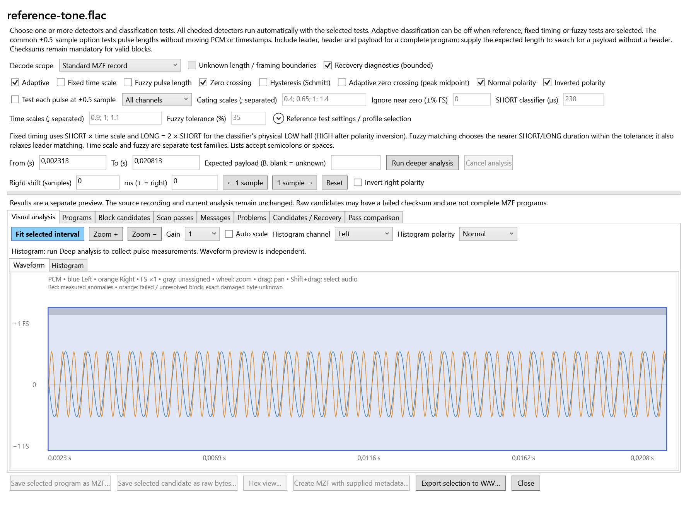
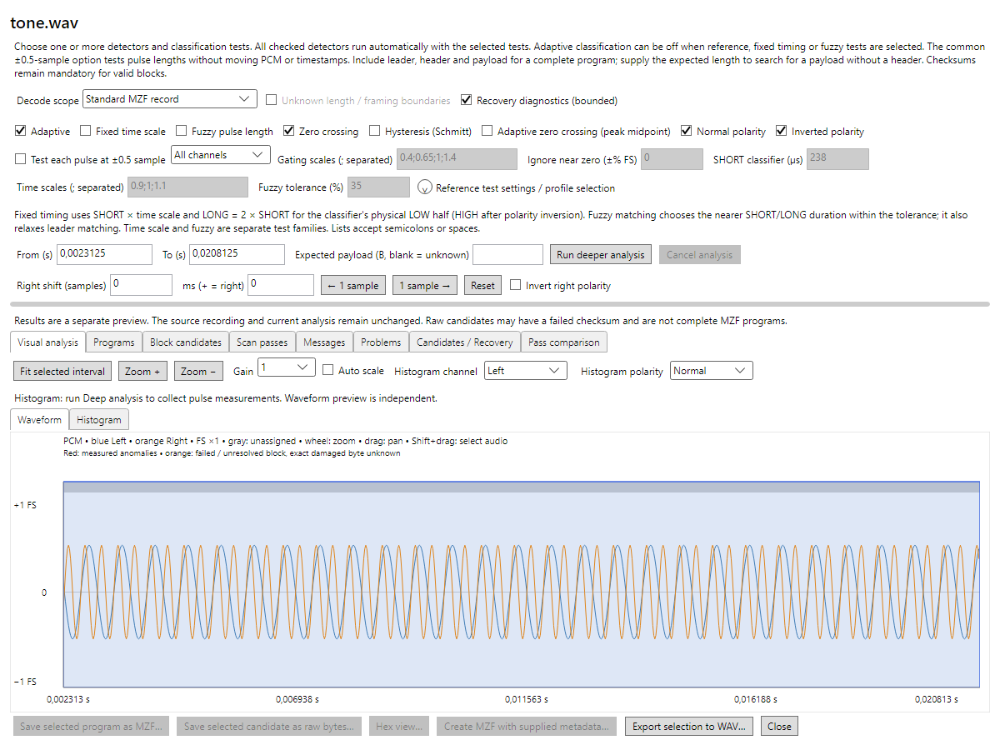
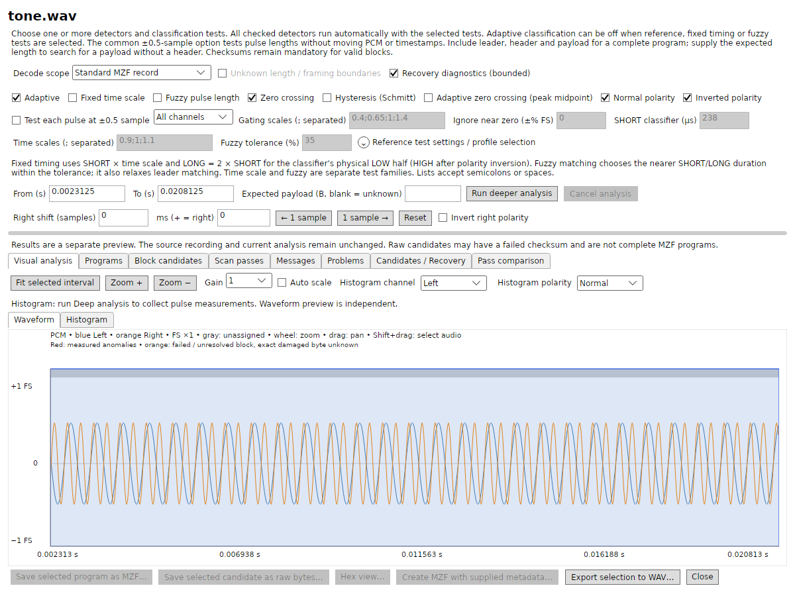
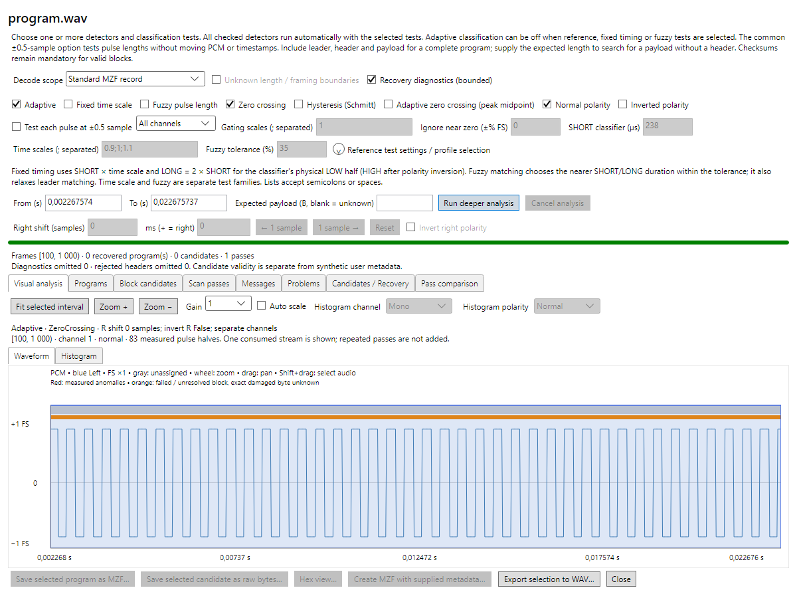

4. 11. 2026. Přímý render původního WPF a nové Avalonia implementace. Obrázky nebyly retušovány. WPF má systémové DPI Windows, Avalonia render 96 DPI. První tři obrázky zobrazují stejné stereo PCM 48 kHz / 16 bit, framy [111,999); názvy souborů a WAV/FLAC container se liší.
Původ souborů a SHA-256 · Rozsah opravy



